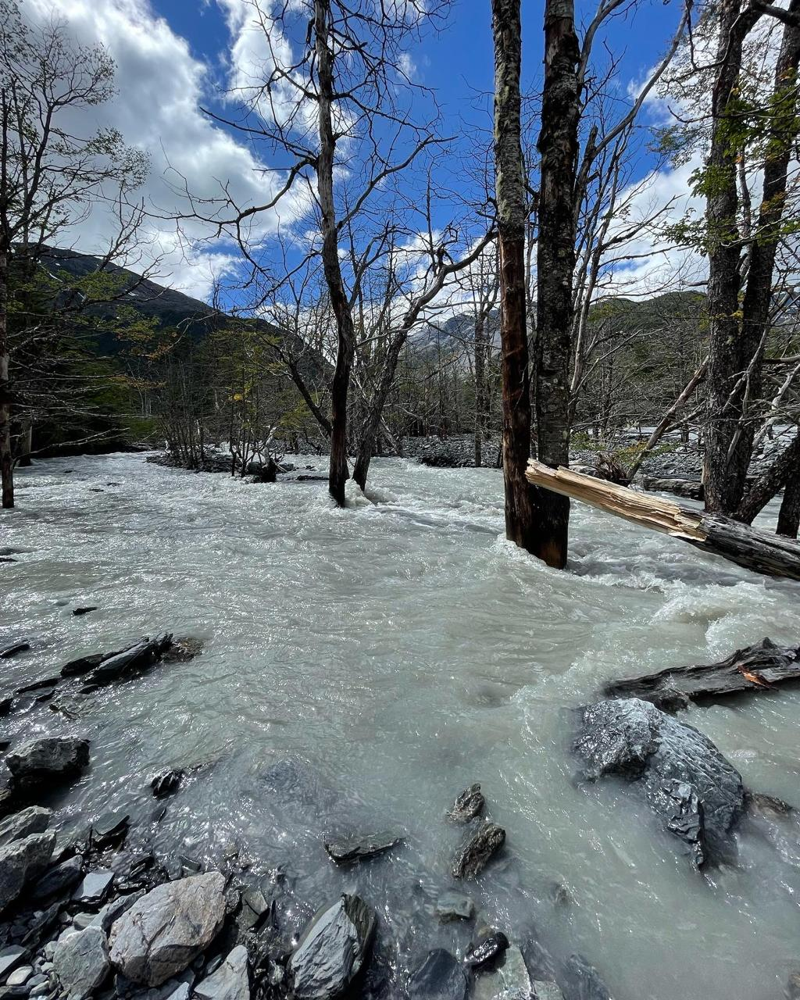

Tu parcelación, con el agua a favor
Diseñamos lagunas, humedales y sistemas hídricos que convierten el agua de un problema en el elemento más valioso del predio. Y resolvemos lo necesario: drenaje, saneamiento y abastecimiento.


Qué obtienes
Un predio con el agua ordenada
Sin zonas inundables, sin caminos que se destruyen cada invierno, sin pozos que fallan en verano.
Elementos de valor
Una laguna, un humedal o una piscina natural que eleva la calidad del lugar y lo diferencia de cualquier otro predio.
Documentación para avanzar
Informes, memorias y planos que sirven para ejecutar, coordinar con instaladores o fundamentar permisos.
Lo que más se necesita
Lagunas, Humedales
y Piscinas Naturales
El elemento diferenciador del predio. Diseño hidráulico, topográfico y de vegetación. Sistemas que funcionan solos.
Drenaje predial
y aguas lluvias
Control de escorrentía, protección de caminos y obras puntuales bien dimensionadas.
Seguridad hídrica
y abastecimiento
Diagnóstico de pozos, captaciones y almacenamiento. Agua garantizada en todas las estaciones.
Saneamiento
particular
Sistemas bien ubicados, bien dimensionados y con criterio técnico. Sin problemas operacionales futuros.
Recarga e
infiltración
Soluciones que retienen el agua en el predio, recargan la napa y reducen la escorrentía superficial.
Revisión técnica
antes de comprar
Evaluación hídrica de un predio: restricciones, oportunidades y riesgos, antes de tomar la decisión.
Cómo trabajamos
Levantamiento
Revisión de antecedentes y objetivos del proyecto. Visita al predio cuando aporta valor para el diagnóstico.
Análisis y diseño
Escenarios, dimensionamientos y criterios técnicos adaptados a la realidad del sitio. Sin soluciones genéricas.
Entrega y soporte
Informe técnico, planos y recomendaciones. Coordinamos con instaladores o constructores si el proyecto lo requiere.
Lo que más preguntan
¿Van a terreno?
Sí, cuando aporta valor. También podemos iniciar con revisión remota — fotos, ubicación, antecedentes — y confirmar en terreno si corresponde.
¿Qué entregan exactamente?
Depende del alcance acordado: informe técnico, recomendaciones priorizadas y documentación (memoria y planos cuando aplica) lista para avanzar con ejecución.
¿Sirve para una comunidad o comité?
Sí. Evaluamos a nivel de loteo o comité: problemas comunes, prioridades y medidas por etapas.
¿En cuánto tiempo responden?
Primera respuesta en 24–48 horas hábiles para levantar tu caso y proponer los próximos pasos.
Cuéntanos tu predio
Ubicación, principal problema o proyecto, antecedentes disponibles. Con eso podemos orientarte y proponer próximos pasos concretos.
Escribirnos por correo